桜色メモリアル 公式攻略本 ― アルバム全183件コンプリート条件
恋愛エンディング条件：好感度80以上／得意パラメータ55以上（さくら＝魅力・あかり＝運動・ゆき＝学力・りん＝芸術）／信頼度50以上／傷心度70未満／嫉妬度80未満。先生エンドはルート最終段階＋先生の好感度30以上で最優先。特典写真は4人の恋愛エンド思い出を集めると解放（複数周回可）。
【物語】13件

1. 桜の下の再会（桜井さくら／4月）
条件：ゲーム開始時（プロローグ）で解放 ― 桜丘黒羽学園の校門前。舞う桜の中、幼なじみの桜井さくらと再会した。高校生活の3年間が、ここから始まった。
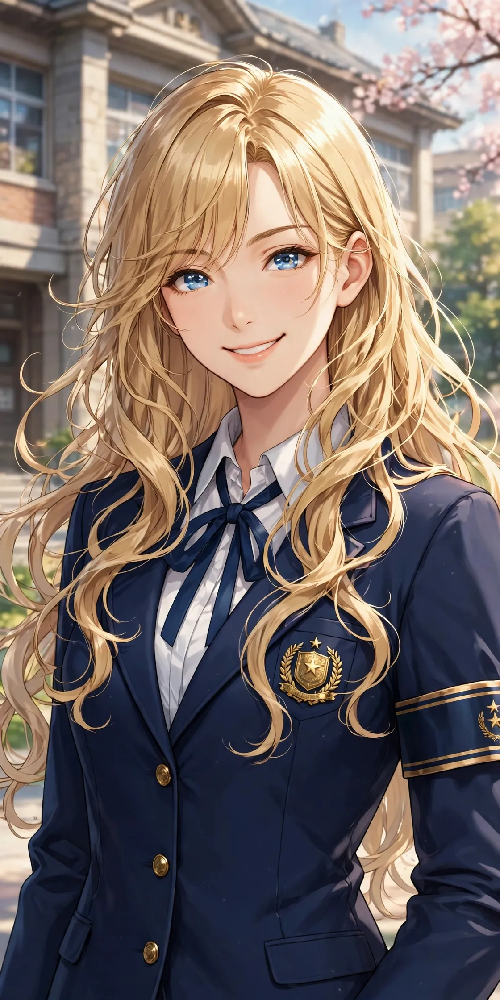
2. 屋上の伝説（藤原りん／5月）
条件：固定行事「屋上の伝説」が発生する（毎年・季節ターン4） ― 「卒業式の日、校舎の屋上で告白すると、その恋は実る」――代々受け継がれる桜丘黒羽学園の神話を聞いた日。屋上への階段は、普…
3. 彼女の物語（桜井さくら／物語）
条件：ヒロインの個別ストーリー（物語）が進む ― 出会い、すれ違い、小さな秘密、そして本音。彼女との物語は、イベントの寄せ集めじゃない。ちゃんと、心でつながった3年間だっ…
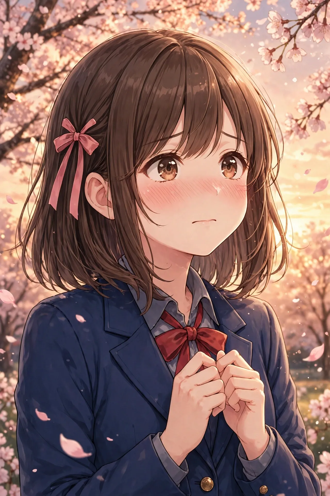
4. 夕日の下校路（桜井さくら／4月）
条件：固定行事「夕日の下校路」が発生する（毎年・季節ターン2） ― 入学してすぐの放課後。夕日の下校路を並んで歩いた日。何気ない帰り道が、物語の始まりだった。
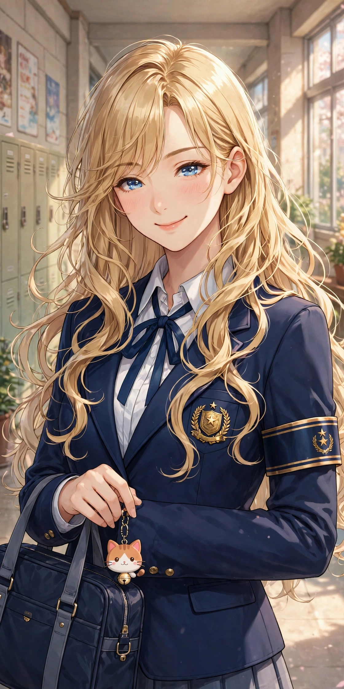
5. 卒業アルバムの寄せ書き（藤原りん／3月）
条件：固定行事「卒業アルバムの寄せ書き」が発生する（毎年・季節ターン45） ― 卒業アルバムの寄せ書き。彼女の字で書かれた一文――『屋上で、待ってる』。卒業は、もうすぐそこだった。
6. 伝説の桜の下で（桜井さくら／5月）
条件：固定行事「伝説の桜の下で」が発生する（毎年・季節ターン5） ― 伝説の桜の下。幼なじみと交わした、小さい頃の約束と、これからの約束。物語は、ここから静かに動き出した。
7. 雨の日の相合傘（桜井さくら／雨の日）
条件：追加イベント「相合傘」が発生する ― 雨の日の相合傘。二人の距離によって、断られたり、肩が触れたり、手をつながれたり。同じ雨でも、展開は育て方で変わった。
8. ケンカと仲直り（桜井さくら／いつかの放課後）
条件：追加イベント「ケンカ・仲直り」が発生する ― ケンカして、意地を張って、それでも向き合って仲直りした。ぶつかった分だけ、二人の信頼は深くなった。

9. 二人だけの秘密（月島ゆき／夕方の教室）
条件：追加イベント「秘密を知ってしまう」が発生する ― 夕方の教室で教えてもらった、彼女の秘密。信頼の証を預かる重さと嬉しさは、卒業しても忘れない。
10. 将来の夢を語る夕方（藤原りん／秋の放課後）
条件：追加イベント「将来の夢を語る」が発生する ― 進路と将来の夢を語り合った夕方。卒業は別れではなく、それぞれの夢への出発なのだと知った日。

11. 那珂川と鮎の塩焼き（星野あかり／夏）
条件：イベント「那珂川の川遊び」が発生する ― 黒羽の那珂川で川遊び。冷たい清流と、香ばしい鮎の塩焼き。彼女の笑顔と一緒に、夏の味がした。

12. ホテル花月の合宿（星野あかり／夏）
条件：イベント「ホテル花月の合宿」が発生する ― テニス部の合宿先は、町内のホテル花月。日焼けしたあかりと交わした「鮎を食べに行こう」の約束。

13. 句碑めぐり制覇（月島ゆき／黒羽）
条件：句碑めぐり10か所をすべて制覇する ― 松尾芭蕉の句碑10か所を、彼女と一緒に全部巡った。常念寺から雲巌寺まで――石に刻まれた句と、隣の笑顔が、黒羽の思い出にな…
【行事】30件
14. 体育祭のゴールテープ（星野あかり／6月）
条件：固定行事「体育祭」が発生する（毎年・季節ターン6） ― 体育祭のリレー。バトンをつないで駆け抜けた先に、ゴールテープと仲間の歓声があった。あかりの笑顔が、誰より眩しかった。
15. 期末テストの結果（月島ゆき／7月）
条件：固定行事「期末テスト」が発生する（毎年・季節ターン14） ― 期末テストの返却日。努力の結果が数字になって返ってきた。図書室で一緒に勉強した日々が、静かに報われた気がした。

16. 夏祭りの夜（桜井さくら／8月）
条件：固定行事「夏祭り」が発生する（毎年・季節ターン18） ― 提灯の明かり、たこ焼きの匂い、遠くの花火。浴衣姿の彼女と歩いた夏祭りの夜は、少しだけ大人になった気分だった。

17. 文化祭のステージ（藤原りん／10月）
条件：固定行事「文化祭」が発生する（毎年・季節ターン26） ― 文化祭のステージ。準備の日々も当日の緊張も、幕が下りた瞬間に全部「やってよかった」に変わった。

18. 修学旅行の夜（星野あかり／11月）
条件：固定行事「修学旅行」が発生する（毎年・季節ターン30） ― 修学旅行の夜更かし。布団の上で語り合った将来の夢。窓の外では、知らない街の明かりが静かに瞬いていた。
19. クリスマスの小さな贈り物（藤原りん／12月）
条件：固定行事「クリスマス」が発生する（毎年・季節ターン38） ― クリスマスの放課後。ささやかな贈り物を交換した。包みを開ける時の笑顔が、何よりのプレゼントだった。
20. バレンタインのチョコ（桜井さくら／2月）
条件：固定行事「バレンタイン」が発生する（毎年・季節ターン44） ― 下駄箱にそっと置かれた手作りチョコ。添えられた小さなカードには、短いけれど真剣な言葉が書かれていた。
21. 水泳大会の水しぶき（星野あかり／6月）
条件：固定行事「水泳大会」が発生する（毎年・季節ターン10） ― 水泳大会。プールサイドの声援、水しぶき、夏の始まりの匂い。あかりの泳ぎは誰より速くて、誰より楽しそうだった。
22. 球技大会の逆転シュート（星野あかり／5月）
条件：固定行事「球技大会」が発生する（毎年・季節ターン8） ― 球技大会。残り10秒の逆転シュートが決まった瞬間、体育館の歓声が天井を揺らした。あかりとハイタッチした手が、しばらく熱か…
23. マラソン大会の伴走（桜井さくら／2月）
条件：固定行事「マラソン大会」が発生する（毎年・季節ターン36） ― 冬のマラソン大会。歩きかけた彼女の隣に、そっと並んで走った。ゴールは一人より、二人の方がずっと近かった。
24. 海辺の一日（星野あかり／7月）
条件：固定行事「海の一日」が発生する（毎年・季節ターン16） ― 夏休みの海。波打ち際ではしゃぐ声、塩辛い風、少し焼けた肩。夏が永遠に続けばいいのに、と本気で思った一日。

25. スキー場の転倒（星野あかり／1月）
条件：固定行事「スキー合宿」が発生する（毎年・季節ターン34） ― 冬のスキー。転んで、笑って、手を取って起き上がる。雪の中で掴んだ手の温かさは、しばらく離れなかった。
26. 初詣のおみくじ（月島ゆき／1月）
条件：固定行事「初詣」が発生する（毎年・季節ターン37） ― 新年の神社。二人で引いたおみくじと、恋愛成就の祈願。絵馬に書いた願い事は、卒業まで秘密。
27. ホワイトデーのお返し（桜井さくら／3月）
条件：固定行事「ホワイトデー」が発生する（毎年・季節ターン46） ― バレンタインのお返し。奮発した贈り物を渡すと、彼女は宝物みたいに抱きしめた。卒業まで、あと少し。
28. 七夕の短冊（月島ゆき／7月）
条件：固定行事「七夕」が発生する（毎年・季節ターン12） ― 七夕の笹に結んだ短冊。願い事は卒業まで秘密。それでも、隣に立つ人の願いが叶えばいいと、本気で思った夜。

29. ハロウィンの仮装（藤原りん／10月）
条件：固定行事「ハロウィン」が発生する（毎年・季節ターン28） ― 生徒会主催のハロウィンパーティー。仮装した彼女の、いつもと違う笑顔。お菓子をくれなきゃイタズラする、と本気で言われた気が…

30. 水族館の夜（月島ゆき／8月）
条件：固定行事「水族館の夜」が発生する（毎年・季節ターン20） ― 夏の夜の水族館。青い闇の中で光るクラゲと、隣で静かに見上げる彼女。昼とは違う、秘密の世界みたいだった。
31. 文化祭準備の放課後（藤原りん／10月）
条件：固定行事「文化祭準備」が発生する（毎年・季節ターン24） ― 文化祭準備の放課後。段ボールと絵の具と、笑い声。祭りの前のざわめきが、一番楽しかったかもしれない。
32. 合格お守り（月島ゆき／1月）
条件：固定行事「合格お守り」が発生する（毎年・季節ターン40） ― 受験直前。彼女から渡された合格お守り。握りしめるたびに、隣で頑張る人の顔が浮かんだ。
33. 弁論大会の壇上（月島ゆき／5月）
条件：固定行事「弁論大会」が発生する（毎年・季節ターン7） ― 弁論大会。震える声で始まった彼女の弁論は、最後には会場中を静かにさせた。言葉の力が、人の心を動かした日。

34. 冬のイルミネーション（藤原りん／1月）
条件：固定行事「冬のイルミネーション」が発生する（毎年・季節ターン39） ― 冬の駅前イルミネーション。光のトンネルの中で、彼女が言った。『点灯の瞬間を一緒に見られて、よかった』。寒さの中の、温かい…
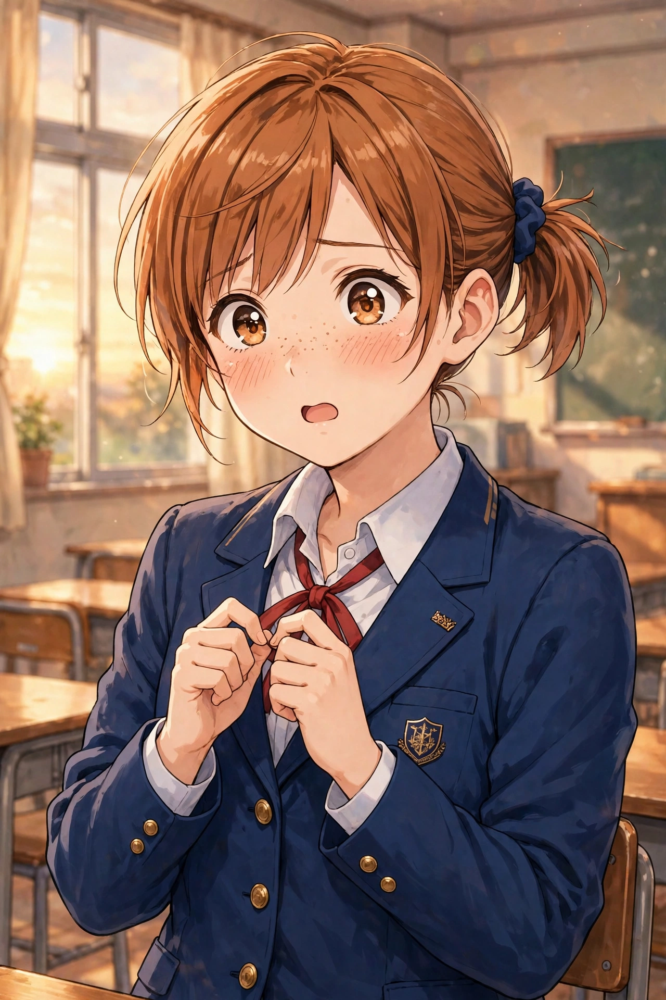
35. 線香花火の夜（星野あかり／8月）
条件：固定行事「線香花火の夜」が発生する（毎年・季節ターン23） ― 夏の終わりの夕方、河原で線香花火をした。小さい火花が落ちそうで落ちない時間。『なんか、私たちみたいだね』と彼女が笑った。

36. 秋の音楽室コンサート（藤原りん／11月）
条件：固定行事「秋の音楽室コンサート」が発生する（毎年・季節ターン31） ― 秋の放課後、音楽室の小さなコンサート。夕日に染まるピアノと、特等席で聴いた一曲。卒業の日に聴かせたい曲の、練習だった。
37. 節分と本気の豆（藤原りん／2月）
条件：固定行事「節分」が発生する（毎年・季節ターン43） ― 生徒会企画の節分。鬼役を引き受けて、彼女の本気の豆に本気で逃げた。笑い声の響く校舎は、卒業を前に少しだけ賑やかだった。
38. 二人三脚の練習（星野あかり／4月）
条件：固定行事「二人三脚の練習」が発生する（毎年・季節ターン3） ― 体育の授業で二人三脚の練習をした日。体操着で肩を組んで、転んで、笑って。足並みが揃った瞬間、二人の距離も少し縮まった気が…

39. 期末前の勉強会（月島ゆき／6月）
条件：固定行事「期末前の勉強会」が発生する（毎年・季節ターン11） ― 期末テスト前の図書室勉強会。教え合って、励まし合って、閉館時間まで。勉強だけじゃない何かが、静かに育っていた。
40. 修学旅行のしおり作り（藤原りん／11月）
条件：固定行事「修学旅行の準備」が発生する（毎年・季節ターン29） ― 修学旅行の班決めとしおり作り。誰と同じ班になるかで、放課後のざわめきが変わった。旅行は、始まる前から始まっていた。
41. 海辺の夏服（星野あかり／7月）
条件：固定行事「海の一日」で一緒に行く相手が星野あかりになる ― 夏の海辺。水着ではなく夏服で波打ち際を歩いた一日。麦わら帽子と潮風と、彼女の笑顔。夏の思い出は、服が濡れるくらいはしゃい…
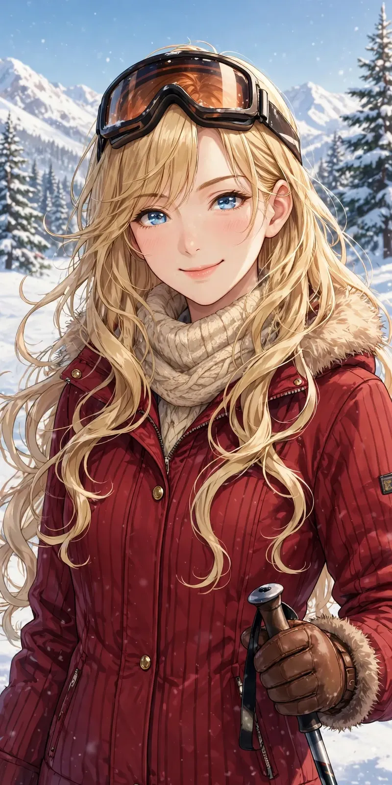
42. 雪山の生徒会長（藤原りん／1月）
条件：固定行事「スキー合宿」で一緒に行く相手が藤原りんになる ― スキー場のりん。赤いウェアにゴーグルを上げて、生徒会長らしくないほど楽しそうに笑っていた。雪山では、誰もが少しだけ子供に…
43. くろばね夏まつりの花火（桜井さくら／8月）
条件：8月の「芭蕉の里くろばね夏まつり・市民花火大会」が発生する ― 芭蕉の里くろばね夏まつりのフィナーレ、市民花火大会。那珂川の水面に映る大輪と、隣の浴衣姿。「来年も、同じ場所で」――夏の…
【ほっこり】45件
44. 看病とおかゆ（桜井さくら／9月）
条件：固定行事「看病」が発生する（毎年・季節ターン22） ― 風邪で寝込んだ彼女の家を訪ねた日。冷えピタを貼って、おかゆを作って、「ありがとう」の弱々しい笑顔。看病は、距離が縮まる魔…
45. 誕生日の贈り物（桜井さくら／いつかの記念日）
条件：ヒロインの誕生日イベントが発生する ― 彼女の誕生日。覚えていてくれたことが、何よりのプレゼントだと言われた。贈り物より、気持ちが嬉しいのだと知った日。

46. 雪の日の図書室（月島ゆき／12月）
条件：固定行事「雪の日の図書室」が発生する（毎年・季節ターン35） ― 雪の日の図書室は、一年で一番静かだった。隣の席で本を読む彼女と、窓の外の雪。何も起きないのに、忘れられない一日。
47. 紅葉と缶コーヒー（桜井さくら／11月）
条件：固定行事「紅葉の放課後」が発生する（毎年・季節ターン32） ― 秋の放課後、紅葉の坂道。温かい缶コーヒーを分け合って、他愛ない話をした。何でもない時間が、一番色づいていた。
48. チョコ作りの試食係（桜井さくら／2月）
条件：固定行事「チョコ作りの試食係」が発生する（毎年・季節ターン42） ― バレンタイン直前。手作りチョコの試食係に任命された。少し焦げた試作品の味は、なぜか本番より楽しかった。
49. 梅雨の図書室（月島ゆき／6月）
条件：固定行事「梅雨の図書室」が発生する（毎年・季節ターン9） ― 梅雨の放課後。雨の音に守られた図書室で、隣の席の彼女と静かに本を読んだ。何も起きない時間が、一番物語みたいだった。
50. 夏休みの夜の電話（桜井さくら／8月）
条件：固定行事「夏休みの夜の電話」が発生する（毎年・季節ターン17） ― 夏休みの夜、なんでもない用件でかかってきた電話。切るのが惜しくて、他愛ない話が1時間続いた。声だけの距離が、一番近かった…
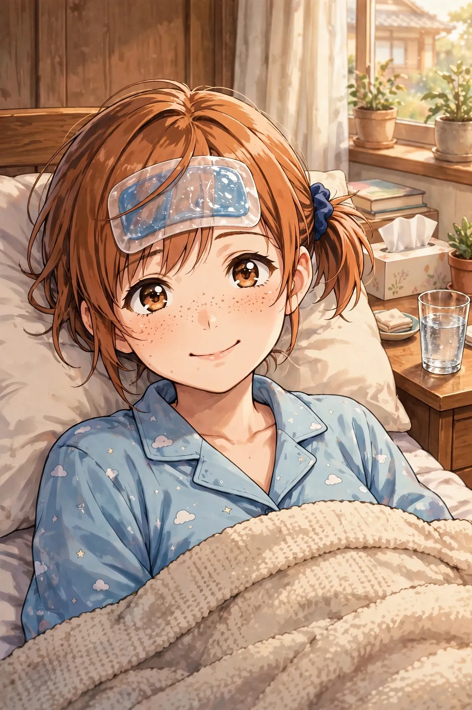
51. 看病と冷えピタ（星野あかり／9月）
条件：固定行事「看病」で看病する相手が星野あかりになる ― 風邪で寝込んだ彼女のお見舞い。冷えピタとおかゆと、弱々しい「ありがとう」。普段は強がりな彼女の、素直な顔を見た日。
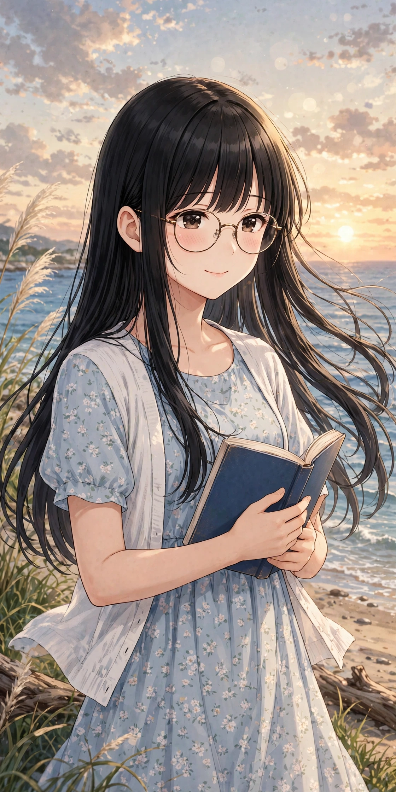
52. 夕日の海と本（月島ゆき／7月）
条件：固定行事「海の一日」で一緒に行く相手が月島ゆきになる ― 夕日の海辺で、本を抱えて立つゆき。波の音の中で読む物語と、隣に立つ人の横顔。静かな夏の夕方が、忘れられない1ページになっ…
53. 子猫と傘（桜井さくら／いつかの放課後）
条件：ほっこりイベント「子猫と傘」が発生する（ランダム） ― 雨上がりの帰り道、段ボールの中で鳴く子猫を見つけた。
54. おにぎりの味（桜井さくら／いつかの放課後）
条件：ほっこりイベント「おにぎりの味」が発生する（ランダム） ― お昼、財布を忘れて途方に暮れていると、彼女がおにぎりを半分分けてくれた。
55. 坂道の荷物（星野あかり／いつかの放課後）
条件：ほっこりイベント「坂道の荷物」が発生する（ランダム） ― 駅前の急な坂で、重い荷物に困るおばあさんを見かけた。
56. 相合傘（月島ゆき／いつかの放課後）
条件：ほっこりイベント「相合傘」が発生する（ランダム） ― 突然の夕立。傘を忘れた彼女が軒下で困っていた。
57. 風に飛んだプリント（藤原りん／いつかの放課後）
条件：ほっこりイベント「風に飛んだプリント」が発生する（ランダム） ― 突風で生徒会のプリントが校庭に散らばった。
58. 帰り道の星空（星野あかり／いつかの放課後）
条件：ほっこりイベント「帰り道の星空」が発生する（ランダム） ― 部活帰り、停電で街の明かりが消えた夜。
59. 手作りクッキー（月島ゆき／いつかの放課後）
条件：ほっこりイベント「手作りクッキー」が発生する（ランダム） ― 放課後、彼女が少し焦げた手作りクッキーを差し出した。
60. 迷子の兄妹（藤原りん／いつかの放課後）
条件：ほっこりイベント「迷子の兄妹」が発生する（ランダム） ― 駅前で泣いている小さな兄妹を見つけた。
61. 帰り道のアイス（星野あかり／いつかの放課後）
条件：ほっこりイベント「帰り道のアイス」が発生する（ランダム） ― 真夏の帰り道、駅前のコンビニでアイスを買った。
62. 下駄箱の手紙（月島ゆき／いつかの放課後）
条件：ほっこりイベント「下駄箱の手紙」が発生する（ランダム） ― 下駄箱に、小さな手紙が入っていた。差出人は彼女。
63. 放課後プリン（桜井さくら／いつかの放課後）
条件：ほっこりイベント「放課後プリン」が発生する（ランダム） ― 学食の期間限定プリン、最後の1個。
64. 雪の日の手袋（月島ゆき／いつかの放課後）
条件：ほっこりイベント「雪の日の手袋」が発生する（ランダム） ― 初雪の日、駅までの道で手が悴んだ。
65. 短冊の願い（藤原りん／いつかの放課後）
条件：ほっこりイベント「短冊の願い」が発生する（ランダム） ― 七夕の笹に短冊を結ぶ放課後。
66. 温かい缶コーヒー（藤原りん／いつかの放課後）
条件：ほっこりイベント「温かい缶コーヒー」が発生する（ランダム） ― 寒い放課後、自販機の前で手を温めていると、彼女が温かい缶コーヒーをもう一本買って、そっと渡してくれた。
67. 押し花の栞（月島ゆき／いつかの放課後）
条件：ほっこりイベント「押し花の栞」が発生する（ランダム） ― 借りていた本を返すと、中から押し花の栞が落ちた。
68. 帰り道の駄菓子屋（桜井さくら／いつかの放課後）
条件：ほっこりイベント「帰り道の駄菓子屋」が発生する（ランダム） ― 帰り道、小さな駄菓子屋に寄った。
69. 図書室の窓の猫（月島ゆき／いつかの放課後）
条件：ほっこりイベント「図書室の窓の猫」が発生する（ランダム） ― 図書室の窓の外に、いつも昼寝をしに来る三毛猫がいる。
70. 忘れ物の傘（桜井さくら／いつかの放課後）
条件：ほっこりイベント「忘れ物の傘」が発生する（ランダム） ― 雨の月曜日、傘立てに先週から残ったままの傘があった。
71. 点灯前のイルミネーション（藤原りん／いつかの放課後）
条件：ほっこりイベント「点灯前のイルミネーション」が発生する（ランダム） ― 冬の放課後、駅前のイルミネーションの点灯準備を手伝うことになった。
72. 線路沿いの夕日（星野あかり／いつかの放課後）
条件：ほっこりイベント「線路沿いの夕日」が発生する（ランダム） ― 帰り道、線路沿いの土手で夕日が沈むのを見ていた。
73. 本の栞の裏（月島ゆき／いつかの放課後）
条件：ほっこりイベント「本の栞の裏」が発生する（ランダム） ― 返してもらった本の栞の裏に、小さな字で一文が書かれていた。
74. 二人三脚の紐（星野あかり／いつかの放課後）
条件：ほっこりイベント「二人三脚の紐」が発生する（ランダム） ― 体育祭の練習で、彼女と二人三脚の紐を結んだ。
75. 帰り道の流れ星（月島ゆき／いつかの放課後）
条件：ほっこりイベント「帰り道の流れ星」が発生する（ランダム） ― 少し遅くなった帰り道、彼女と夜空を見上げていたら、流れ星が一つ、静かに流れた。
76. 波打ち際の貝殻（星野あかり／いつかの放課後）
条件：ほっこりイベント「波打ち際の貝殻」が発生する（ランダム） ― 海辺で綺麗な貝殻を見つけた。
77. 看病のおかゆ（桜井さくら／いつかの放課後）
条件：ほっこりイベント「看病のおかゆ」が発生する（ランダム） ― 風邪気味で早退した日、彼女が家までプリントを届けてくれた。
78. リフトの二人（藤原りん／いつかの放課後）
条件：ほっこりイベント「リフトの二人」が発生する（ランダム） ― スキー合宿のリフト。隣に座った彼女と、眼下の銀世界を見下ろした。
79. 海辺の栞（月島ゆき／いつかの放課後）
条件：ほっこりイベント「海辺の栞」が発生する（ランダム） ― 海辺の小さな店で、貝殻の栞を見つけた。
80. マフラーの片端（桜井さくら／いつかの放課後）
条件：ほっこりイベント「マフラーの片端」が発生する（ランダム） ― 寒い帰り道、彼女が長いマフラーの片端を、こちらの首にも巻いてくれた。
81. 雪見ココア（藤原りん／いつかの放課後）
条件：ほっこりイベント「雪見ココア」が発生する（ランダム） ― 雪の放課後、駅前のカフェで温かいココアを飲んだ。
82. 山の形の図書館（月島ゆき／いつかの放課後）
条件：ほっこりイベント「山の形の図書館」が発生する（ランダム） ― 放課後、彼女に連れられて黒羽図書館へ。
83. 鮎の塩焼き（星野あかり／いつかの放課後）
条件：ほっこりイベント「鮎の塩焼き」が発生する（ランダム） ― 那珂川の河原で、鮎の塩焼きをほおばった。
84. 帰りの寄り道（桜井さくら／いつかの放課後）
条件：ほっこりイベント「帰りの寄り道」が発生する（ランダム） ― 帰り道、彼女とダイユーに寄り道。
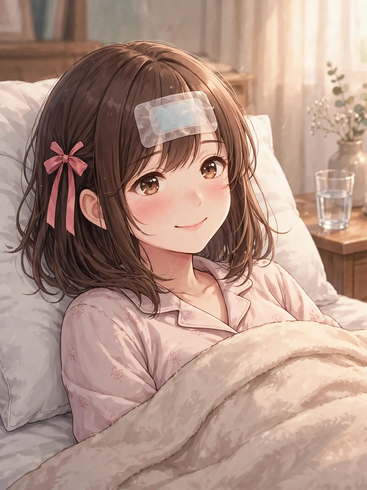
85. お見舞いの温かさ（桜井さくら／休養の日）
条件：病気で寝込んだ時にヒロインが見舞いに来る ― 病気で寝込んだ日、彼女が見舞いに来てくれた。おかゆと心配そうな顔。何よりの薬は、人の温かさだった。
86. 電話の向こうの声（桜井さくら／いつかの夜）
条件：「電話・メール」コマンドで連絡する ― 電話番号を教えてもらってから始まった、夜の電話。他愛ない話が、気づけば長電話になっていた。

87. メールのやりとり（月島ゆき／いつかの放課後）
条件：「電話・メール」コマンドで連絡する ― メールアドレスを教えてもらった日から、放課後の小さなやりとりが始まった。短い文面の向こうに、彼女の日常が見えた。
88. 迷子の子供と交番（藤原りん／駅前の休日）
条件：追加イベント「迷子の子供を助ける」が発生する ― 駅前で迷子の子供を助けた日。彼女が見ていたのは、結果だけじゃなく、困った人を見捨てない姿勢だった。
【デート】3件
89. プラネタリウムの約束（桜井さくら／8月）
条件：固定行事「プラネタリウム」が発生する（毎年・季節ターン19） ― 夏のプラネタリウム。暗闇に浮かぶ満天の星と、隣で小さく息をのむ彼女。星より、隣の横顔の方が心に残った。
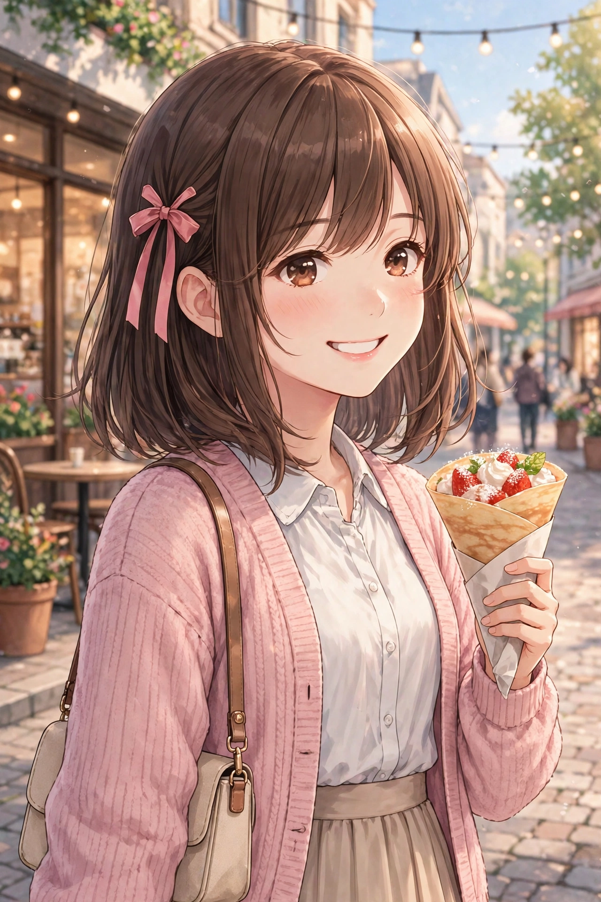
90. 初めてのデート（桜井さくら／休日）
条件：初めてデートを成功させる ― ドキドキしながら待った待ち合わせ場所。現れた彼女の笑顔を見て、緊張が一気に嬉しさに変わった。
91. お部屋デート（桜井さくら／休日）
条件：お部屋デートに行く（好感度60・親密度35以上で開放） ― 初めて彼女を自宅に招いた休日。一緒に作ったランチと、何でもない会話。部屋の中の時間は、外のデートとは違う近さがあった。
【オープニング／名所】22件

92. 城址公園の桜の下・制服（桜井さくら／入学の日）
条件：プロローグ（ゲーム開始時）で解放 ― 黒羽城址公園の桜の下。制服姿の彼女と、新しい3年間の物語が始まる。

93. 幼い頃の指切り（桜井さくら／思い出）
条件：さくらの物語 第1章をクリアする ― 幼い頃に交わした指切りの約束。桜の木の下で交わした、小さな指と指。

94. 那珂川河川敷でテニス（夕方）（星野あかり／夏の夕方）
条件：イベント「那珂川の川遊び」が発生する ― 那珂川の河川敷、夕方のテニスコート。ラケットを構える彼女の横顔に、夕日が差した。
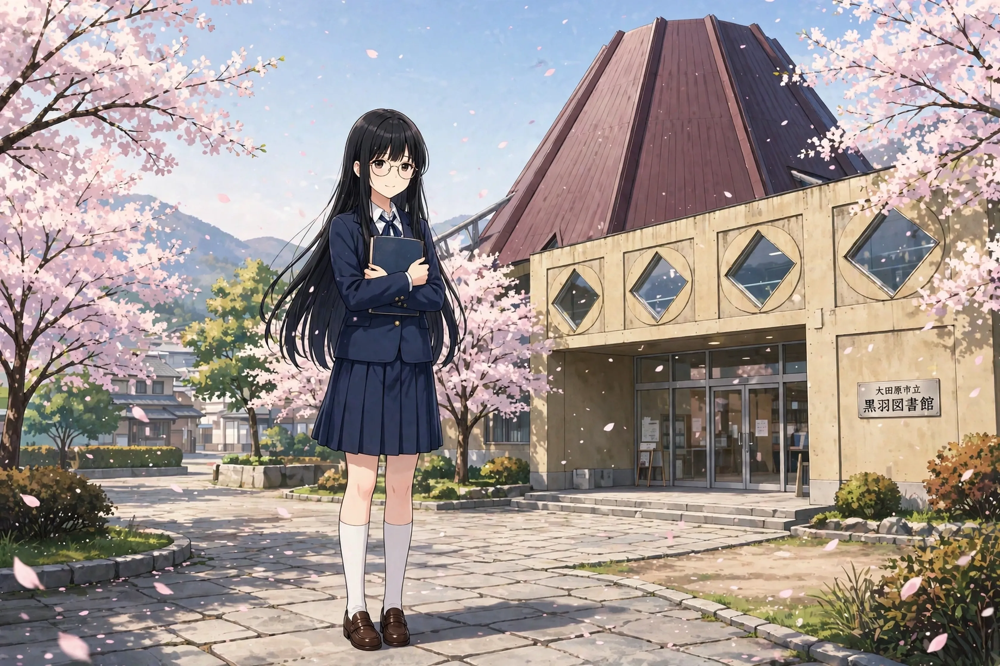
95. 黒羽図書館前（月島ゆき／放課後）
条件：黒羽めぐりで「黒羽図書館」を訪れる ― 山みたいな形の黒羽図書館の前で。本を抱えた彼女が、静かに微笑んだ。
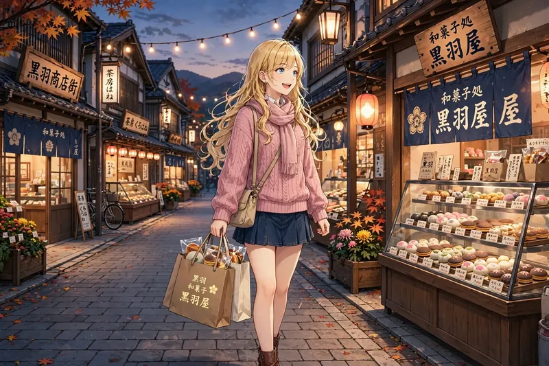
96. 商店街の和菓子屋前（夕方）（藤原りん／夕方）
条件：固定行事「文化祭の買い出し」が発生する ― 夕方の商店街、和菓子屋の前。甘い匂いと、放課後のざわめき。
97. やなで鮎の塩焼き（星野あかり／夏）
条件：地域イベント「那珂川のやな場」が発生する ― 黒羽観光やなで食べる鮎の塩焼き。香ばしい匂いと、川のせせらぎと、彼女の笑顔。

98. 夏まつり花火・浴衣（桜井さくら／8月）
条件：8月の固定行事「くろばね夏まつり・市民花火大会」が発生する ― くろばね夏まつりの花火と、浴衣姿の彼女。那珂川の水面にもう一つ咲く大輪。

99. 雲巌寺の紅葉（月島ゆき／秋）
条件：地域イベント「雲巌寺の紅葉」が発生する ― 紅葉に染まる雲巌寺。赤い山門と、静かな境内に響く落ち葉の音。

100. 雪の黒羽・冬コート（桜井さくら／冬）
条件：固定行事「雪の日の図書室」が発生する ― 雪の黒羽。冬コートに白い息。静まり返った図書室への道すがら。

101. 卒業・校門の後ろ姿（桜井さくら／卒業式）
条件：いずれかのエンディングに到達する ― 卒業の日、校門を出ていく後ろ姿。3年間の物語の、最後の1ページ。

102. 大関和記念碑（藤原りん／黒羽）
条件：地域イベント「大関和の記念碑」が発生する ― 黒羽城址公園のそばに立つ、大関和の記念碑。町の歴史を見守る石。
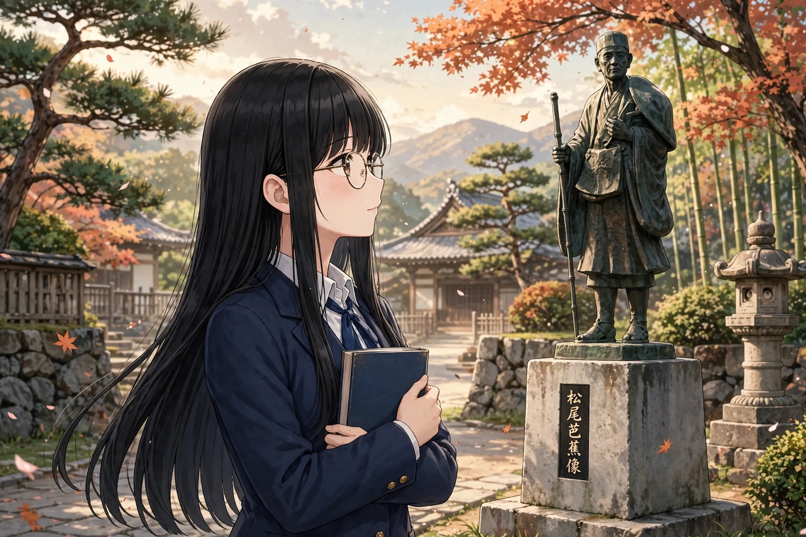
103. 松尾芭蕉像（月島ゆき／黒羽）
条件：地域イベント「松尾芭蕉の石碑」が発生する ― 松尾芭蕉の像。『奥の細道』の旅人が、黒羽の町を静かに見守っている。

104. 黒羽中学校の校舎前（桜井さくら／思い出）
条件：さくらの物語 第1章をクリアする ― 黒羽中学校の校舎前。幼なじみと過ごした、中学時代の放課後。
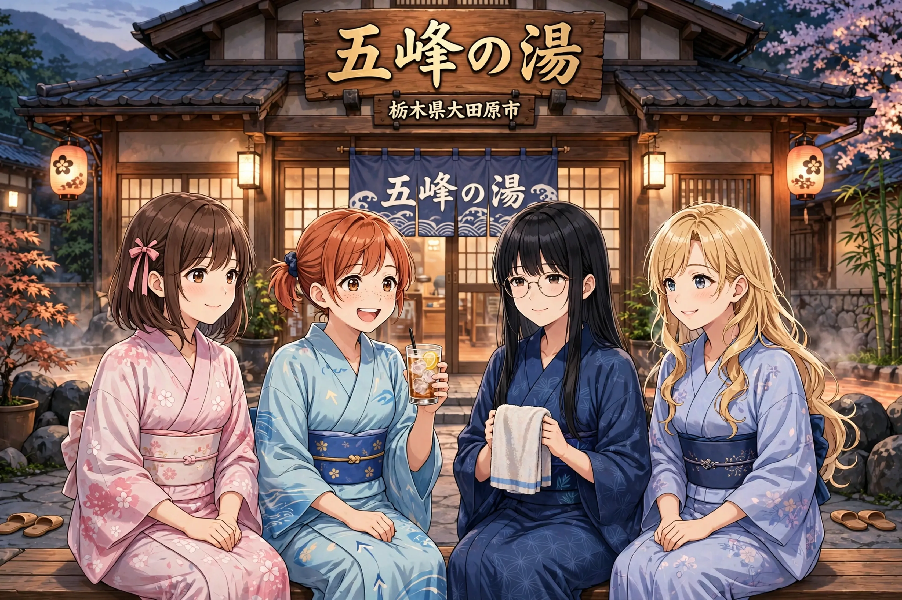
105. 五峰の湯・湯上がり浴衣（桜井さくら／黒羽温泉）
条件：地域イベント「五峰の湯の足湯」が発生する ― 五峰の湯の湯上がり。浴衣姿でほっと一息、温泉まんじゅうの甘い香り。

106. 句碑「田一枚…」（月島ゆき／句碑めぐり）
条件：句碑めぐり8か所目（芭蕉の道の途中）に到達する ― 芭蕉の道の途中の句碑。「田や麦や 中にも夏の ほととぎす」――夏の野の静けさ。

107. 旧黒羽駅ホーム（桜井さくら／夕方）
条件：地域イベント「黒羽の商店街」が発生する ― 夕方の駅のホーム。帰りの電車を待つ、他愛ない時間。

108. 黒羽花市（パノラマ）（桜井さくら／4月）
条件：地域イベント「黒羽花市」が発生する（4月） ― 春の黒羽花市。色とりどりの花の苗が並ぶ、町の春の風物詩。
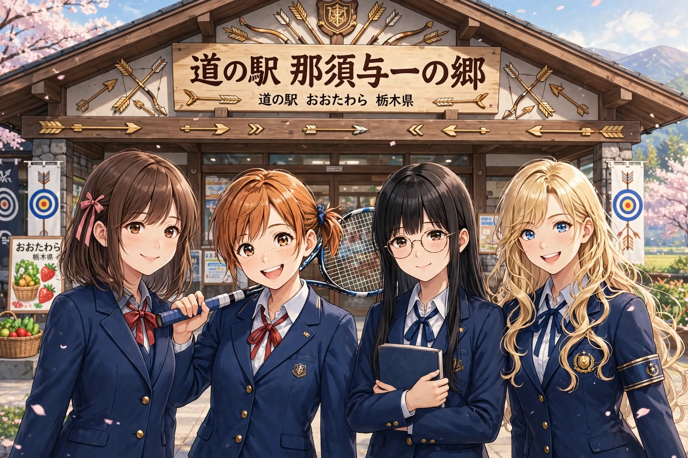
109. 道の駅 那須与一の郷（桜井さくら／黒羽）
条件：地域イベント「道の駅・那須与一の郷」が発生する ― 道の駅「那須与一の郷」。地元の野菜とお土産と、分け合ったソフトクリーム。

110. 那須神社楼門（星野あかり／初詣）
条件：固定行事「初詣」が発生する ― 那須神社の楼門。新年の祈りと、絵馬に書いた内緒の願い。

111. 大雄寺山門（月島ゆき／黒羽）
条件：地域イベント「大雄寺の静けさ」が発生する ― 大雄寺の山門。歴史ある禅寺の静けさに、自然と声が小さくなる。
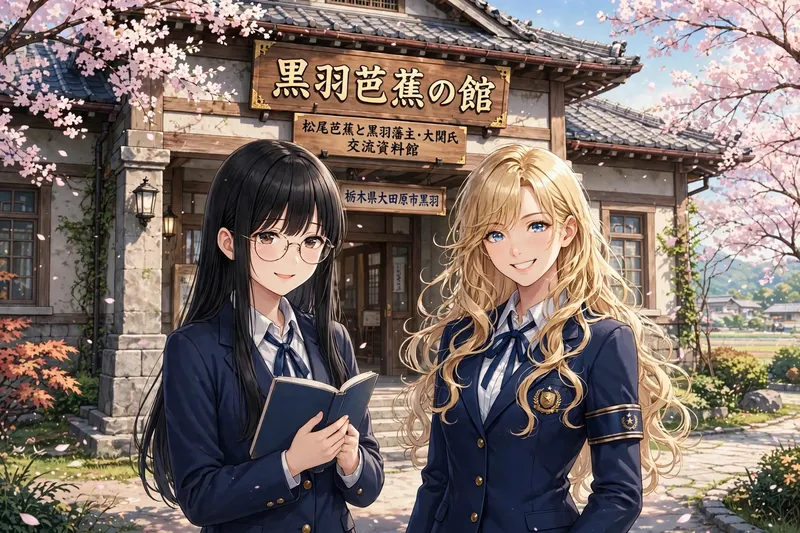
112. 黒羽芭蕉の館（月島ゆき／黒羽）
条件：地域イベント「芭蕉の館の企画展」が発生する ― 黒羽芭蕉の館。芭蕉が14日間滞在した町、その足跡をたどる展示。

113. くらしの館（桜井さくら／黒羽）
条件：地域イベント「くらしの館」が発生する ― くらしの館。昔の暮らしの道具に触れる、町の小さな博物館。
【句碑めぐり】10件

114. 常念寺「野を横に 馬牽むけよ ほととぎす」（月島ゆき／句碑めぐり 1/10）
条件：句碑めぐりで1か所目「常念寺」に到達する ― 句碑めぐり1か所目、常念寺。那須野の広い野と、ほととぎすの声。ゆきの案内で歩く、芭蕉の道の始まり。
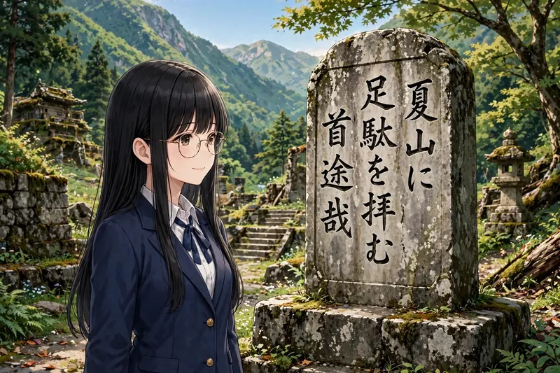
115. 光明寺跡「夏山に 足駄を拝む 首途哉」（月島ゆき／句碑めぐり 2/10）
条件：句碑めぐりで2か所目「修験光明寺跡」に到達する ― 句碑めぐり2か所目、修験光明寺跡。行者像の健脚にあやかって、道中の無事を祈った句。

116. 西教寺・曽良「かさねとは 八重撫子の 名成るべし」（月島ゆき／句碑めぐり 3/10）
条件：句碑めぐりで3か所目「西教寺（曽良句碑）」に到達する ― 句碑めぐり3か所目、西教寺。少女「かさね」の純情を詠んだ、弟子・曽良の句。
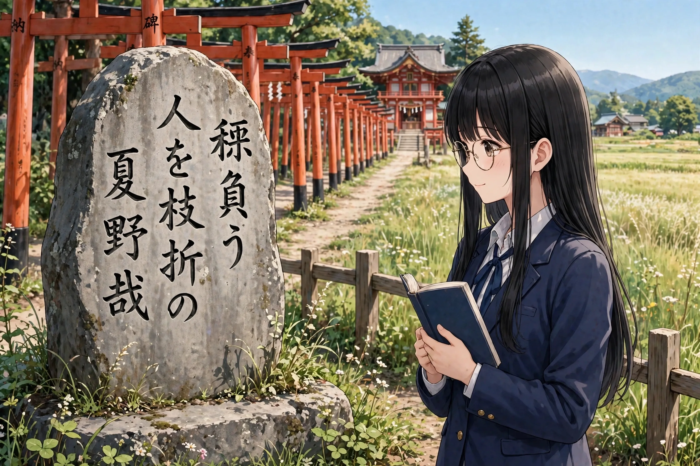
117. 玉藻稲荷「秣負う 人を枝折の 夏野哉」（月島ゆき／句碑めぐり 4/10）
条件：句碑めぐりで4か所目「玉藻稲荷神社」に到達する ― 句碑めぐり4か所目、玉藻稲荷神社。秣を背負う農夫を道しるべにした、夏野の句。

118. 明王寺「今日も又 朝日を拝む 石の上」（月島ゆき／句碑めぐり 5/10）
条件：句碑めぐりで5か所目「明王寺」に到達する ― 句碑めぐり5か所目、明王寺。石の上に立って朝日を拝む行者の姿。

119. 芭蕉の道入口「行く春や 鳥啼き魚の 目は泪」（月島ゆき／句碑めぐり 6/10）
条件：句碑めぐりで6か所目「芭蕉の道入口」に到達する ― 句碑めぐり6か所目、芭蕉の道入口。旅立ちの惜別を込めた『奥の細道』の句。

120. 桃雪邸跡「山も庭も 動き入るるや 夏座敷」（月島ゆき／句碑めぐり 7/10）
条件：句碑めぐりで7か所目「浄法寺桃雪邸跡」に到達する ― 句碑めぐり7か所目、浄法寺桃雪邸跡。山も庭も動き入る、夏座敷の絵画的な句。

121. 芭蕉の道途中「田や麦や 中にも夏の ほととぎす」（月島ゆき／句碑めぐり 8/10）
条件：句碑めぐりで8か所目「芭蕉の道の途中」に到達する ― 句碑めぐり8か所目、芭蕉の道の途中。田や麦の中に響く、夏のほととぎす。
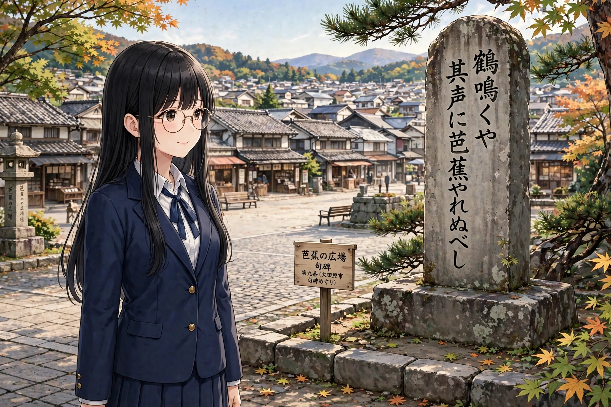
122. 芭蕉の広場「鶴鳴くや 其声に芭蕉 やれぬべし」（月島ゆき／句碑めぐり 9/10）
条件：句碑めぐりで9か所目「芭蕉の広場」に到達する ― 句碑めぐり9か所目、芭蕉の広場。鶴の絵への「賛」、芭蕉の葉まで破れそうな洒落の句。

123. 雲巌寺「木啄も 庵は破らず 夏木立」（月島ゆき／句碑めぐり 10/10）
条件：句碑めぐりで10か所目「雲巌寺」に到達し、句碑めぐりを制覇する ― 句碑めぐり10か所目、雲巌寺。仏頂和尚の徳の前に、きつつきさえ敬意を払う。制覇の最後の1ページ。
【地域イベント】13件

124. 与一まつり・法被（星野あかり／8月）
条件：地域イベント「与一まつり」が発生する（8月） ― 与一まつり。法被姿で練り歩く、夏の黒羽の熱気。
125. 鮎釣り大会（星野あかり／夏）
条件：地域イベント「鮎釣り大会」が発生する（8月） ― 那珂川の鮎釣り大会。日本一の鮎の清流で競う、夏の腕試し。
126. 大田原マラソン応援（桜井さくら／秋）
条件：固定行事「マラソン大会」が発生する ― 大田原マラソンの沿道応援。走る彼女へ、声が枯れるまで声援を送った。

127. 紫陽花まつり（月島ゆき／6〜7月）
条件：地域イベント「紫陽花まつり」が発生する（6〜7月） ― 黒羽城址公園の紫陽花まつり。約6,000株の紫陽花と、夜のライトアップ。

128. なかがわ水遊園（桜井さくら／休日）
条件：地域イベント「なかがわ水遊園」が発生する ― 栃木県なかがわ水遊園。那珂川の魚たちと出会う、水辺の休日。

129. とうがらし収穫（藤原りん／秋）
条件：地域イベント「とうがらし収穫」が発生する（9〜11月） ― 大田原とうがらしの収穫体験。真っ赤な実と、ひりひりする指先と笑い声。
130. 黒羽茶の茶畑（月島ゆき／黒羽）
条件：地域イベント「黒羽茶の茶畑」が発生する ― 黒羽茶の茶畑。緑の畝の向こうに広がる、静かな里山の風景。

131. 産業文化祭（桜井さくら／11月）
条件：地域イベント「産業文化祭」が発生する（11月） ― 大田原産業文化祭。地元の産業と文化が集まる、秋のお祭り。

132. 下侍塚古墳（月島ゆき／黒羽）
条件：地域イベント「下侍塚古墳」が発生する ― 下侍塚古墳と湯津上資料館。古代のロマンに触れる、小さな歴史の旅。
133. やなで鮎つかみ（星野あかり／夏）
条件：地域イベント「やなで鮎つかみ」が発生する（7〜9月） ― やな場で鮎のつかみ取り。冷たい流れと、逃げる鮎と、ずぶ濡れの笑顔。
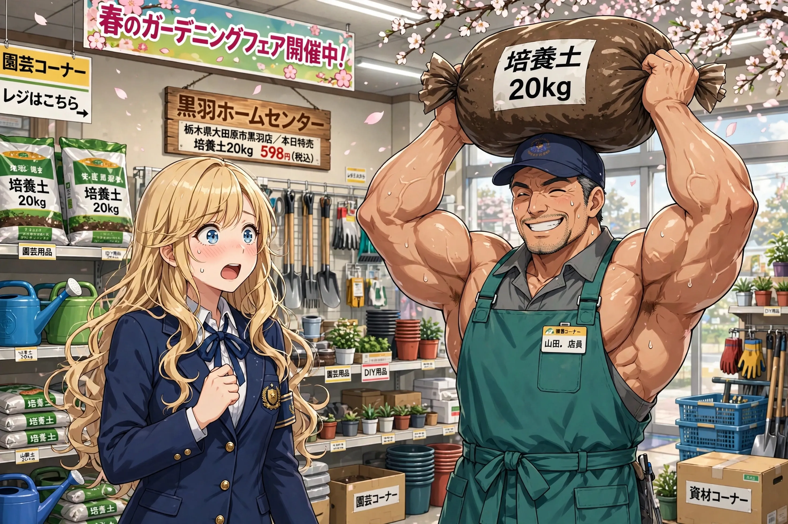
134. ボディビル風おっちゃん（藤原りん／商店街）
条件：地域イベント「ボディビル風おっちゃん」が発生する ― 商店街で出会った、ボディビル風の名物おっちゃん。黒羽の町は、人が面白い。

135. ジェラート屋さん（桜井さくら／休日）
条件：地域イベント「ジェラート屋さん」が発生する ― 町のジェラート屋さん。地元の素材の甘さに、二人で舌鼓。

136. 芭蕉の館（芭蕉＋曽良像）（月島ゆき／黒羽）
条件：地域イベント「芭蕉の館の企画展」が発生する ― 黒羽芭蕉の館の、芭蕉と曽良の像。師弟の旅の足跡が、ここ黒羽に残っている。
【シークレット】10件

137. 保健室で手当て・初対面（藤原りん／保健室）
条件：運動系コマンドで怪我をして、保健室の先生と出会う（先生ルート開始） ― 部活で怪我をして運ばれた保健室。手当てをしてくれたのは、黒髪の養護教諭だった。

138. 保健室ポートレート（藤原りん／保健室）
条件：先生ルート進行中、保健室を訪れる（1回目） ― 午後の保健室。白衣の先生が、窓際でカルテをまとめていた。
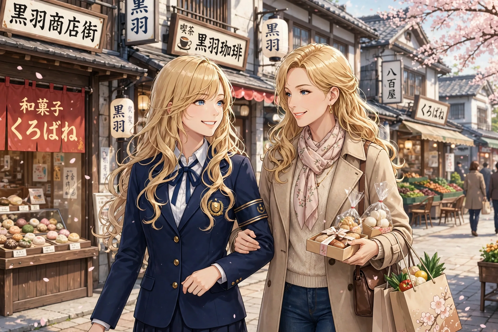
139. 商店街でりんと腕組み（伏線）（藤原りん／商店街）
条件：保健室を2回訪れた後、地域イベントで街中の目撃シーンが発生する ― 商店街で見かけた、金髪の女性と腕を組むりん。…あの女性、どこかで見たような――？
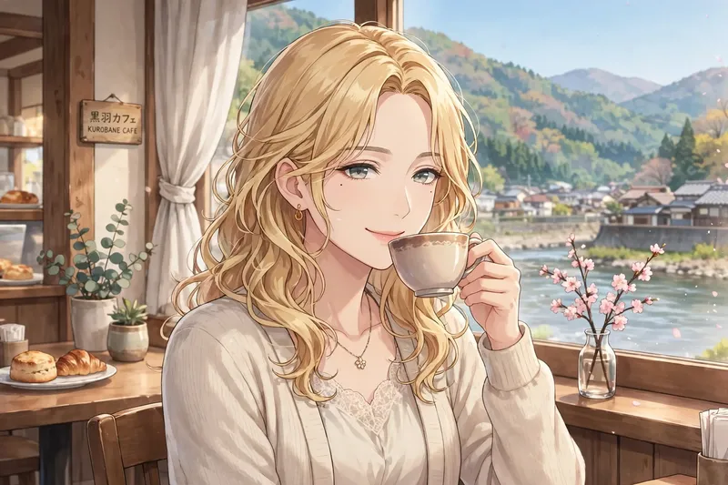
140. 町のカフェ（藤原りん／休日）
条件：姉妹の目撃を2回した後、街で先生（金髪）に単独で出会う ― 町のカフェでばったり。金髪の彼女は、学校の先生とは別人みたいに笑った。

141. 夕方の保健室（藤原りん／保健室）
条件：先生ルート進行中、保健室を訪れる（2回目） ― 夕方の保健室。夕日に染まるベッドと、少しだけ素顔に近い先生の横顔。
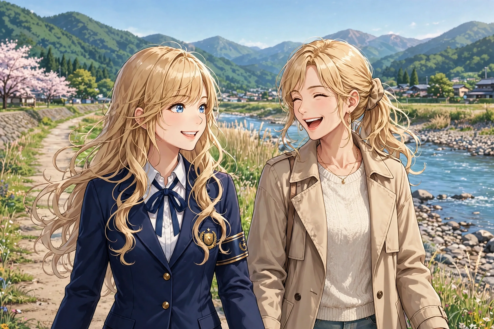
142. 那珂川の河原（藤原りん／休日）
条件：姉妹の目撃を2回した後、街で先生（金髪）に単独で出会う ― 那珂川の河原で出会った金髪の彼女。川の音と、他愛ない会話の休日。

143. 夏まつり浴衣・花火（藤原りん／8月）
条件：姉妹の目撃を2回した後、夏（7〜8月）に街で先生に単独で出会う ― 夏まつりの夜、浴衣姿の金髪の彼女と見た花火。祭りの喧騒の中で交わした約束。

144. 雪の町・缶飲料（藤原りん／冬）
条件：姉妹の目撃を2回した後、冬（12〜2月）に街で先生に単独で出会う ― 雪の町。温かい缶飲料を手渡してくれた金髪の彼女。白い息と、少しの沈黙。

145. 卒業式・正体判明（藤原りん／卒業式）
条件：先生ルート最終段階（単独遭遇3回以上・先生の好感度30以上）で卒業式を迎える ― 卒業式の日、明かされた真実。黒髪は学校用の姿、街の金髪が素顔――そして彼女は、りんの姉だった。
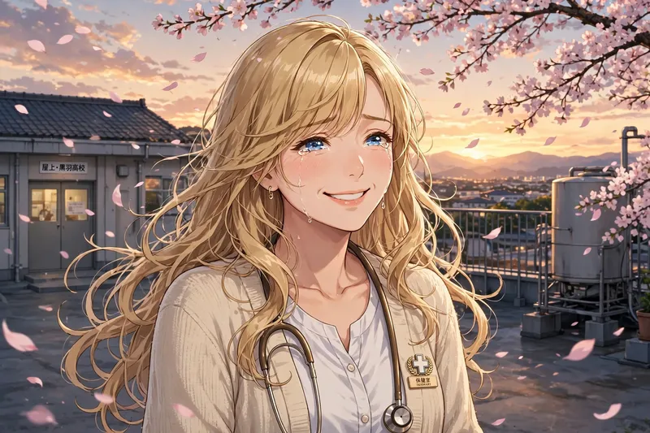
146. 屋上の告白ハッピーエンド（藤原りん／卒業式）
条件：先生ルートで告白エンディングに到達する ― 屋上の伝説は、先生にも届いた。卒業の夕日の中、二人の新しい物語が始まる。
【バッドエンド】20件

147. バッド：手紙を握りしめて（桜井さくら／卒業の夕方）
条件：さくらが一番好感度が高いのに「もう少しだった春」または「ライバル」エンディングになる ― 卒業の夕方、桜の木の下で手紙を握りしめ俯く彼女。あと少し、届かなかった想い。
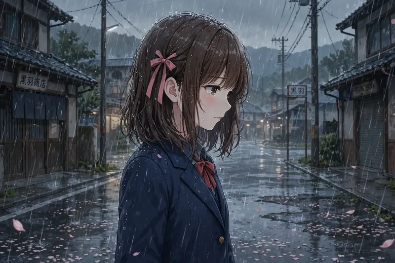
148. バッド：雨の帰り道（桜井さくら／雨の放課後）
条件：卒業時点で、さくらの傷心度が50以上 ― 雨の放課後、傘もささずに濡れて歩く帰り道。届かなかった気持ちが、雨に流れた。

149. バッド：渡せなかった手紙（桜井さくら／夕方の教室）
条件：卒業まで、さくらと出会わない ― 夕方の教室に残された、渡せなかった手紙。机の中の想いは、卒業とともにしまわれた。
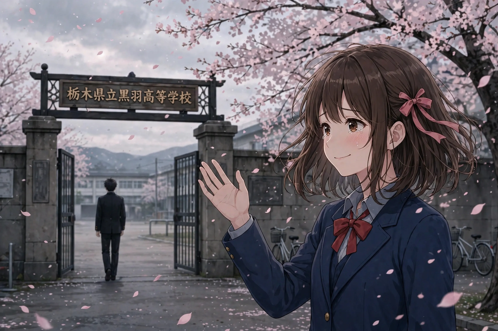
150. バッド：作り笑顔の見送り（桜井さくら／卒業式）
条件：さくらの好感度が40以上なのに、親友または人生型エンディングになる ― 卒業式の校門、作り笑顔で見送る彼女。笑顔の裏の気持ちに、気づくのが遅すぎた。

151. バッド：ベンチの夕方（星野あかり／夕方のコート）
条件：あかりが一番好感度が高いのに「もう少しだった春」または「ライバル」エンディングになる ― 夕方の空のコート、ケガでベンチに座り俯く彼女。隣にいてあげたかった。
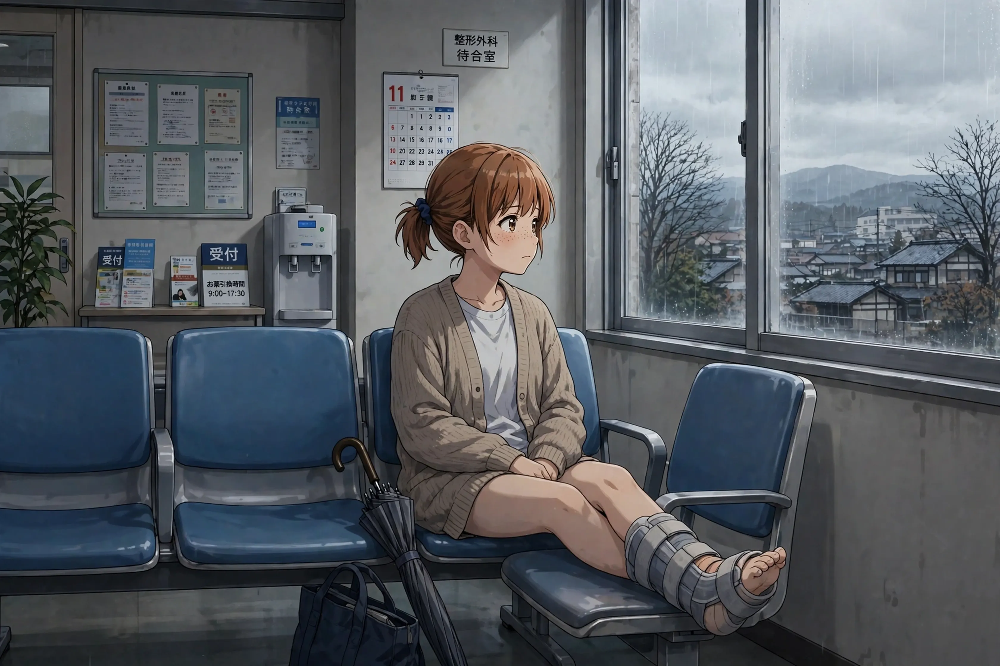
152. バッド：病院の待合室（星野あかり／病院）
条件：卒業時点で、あかりの傷心度が50以上 ― 病院の待合室、足のサポーター。走ることが大好きな彼女の、静かな時間。

153. バッド：置き去りのラケット（星野あかり／雨の河川敷）
条件：卒業まで、あかりと出会わない ― 雨の那珂川河川敷、置き去りのラケット。約束の場所に、彼女は来なかった。

154. バッド：遠征バスの見送り（星野あかり／卒業の朝）
条件：あかりの好感度が40以上なのに、親友または人生型エンディングになる ― 卒業の朝、遠征バスを見送る。走り去るバスと、言えなかった言葉。
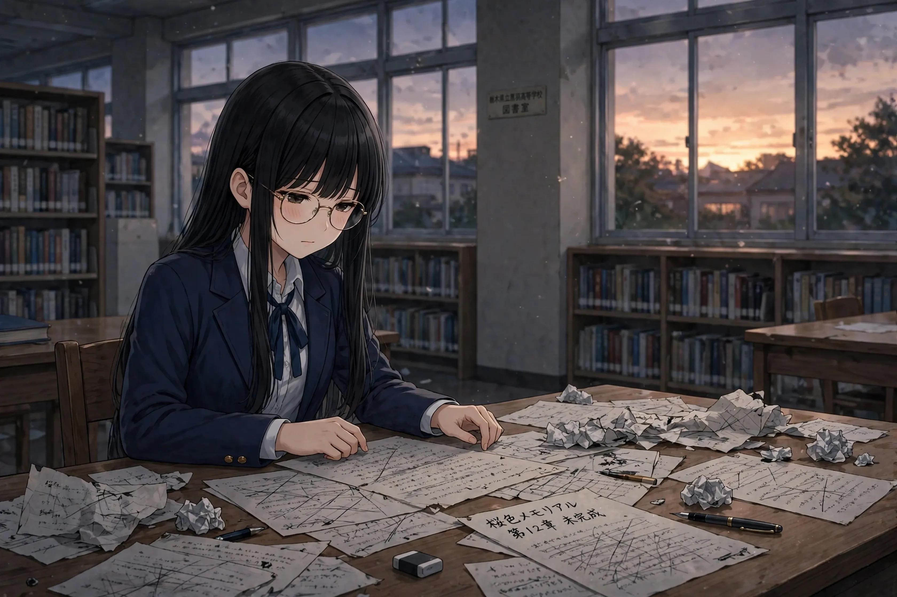
155. バッド：書きかけの原稿（月島ゆき／夕方の図書室）
条件：ゆきが一番好感度が高いのに「もう少しだった春」または「ライバル」エンディングになる ― 夕方の図書室、書きかけの原稿。物語の続きは、誰にも読まれないまま。

156. バッド：雨の軒下の原稿（月島ゆき／雨の日）
条件：卒業時点で、ゆきの傷心度が50以上 ― 雨の図書館の軒下、濡れそうな原稿の束。守ってあげたかった言葉たち。

157. バッド：閉館した図書館前（月島ゆき／雪の夕方）
条件：卒業まで、ゆきと出会わない ― 雪の夕方、閉館した黒羽図書館前。秘密の場所は、もう開かない。
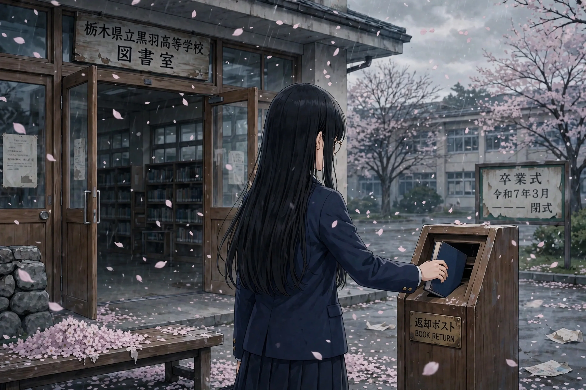
158. バッド：本を返して去る後ろ姿（月島ゆき／卒業の日）
条件：ゆきの好感度が40以上なのに、親友または人生型エンディングになる ― 卒業の日、本を返して去る後ろ姿。貸した本の続きは、永遠に読めない。

159. バッド：書類の山の生徒会室（藤原りん／夕方）
条件：りんが一番好感度が高いのに「もう少しだった春」または「ライバル」エンディングになる ― 夕方の生徒会室、書類の山。全部一人で抱え込む彼女を、支えられなかった。
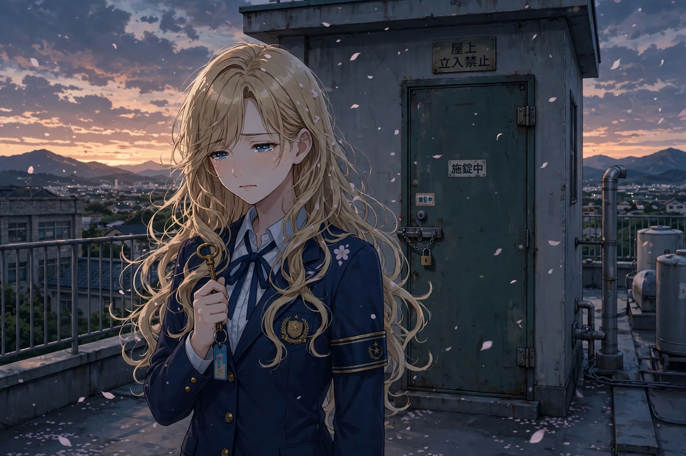
160. バッド：屋上の鍵（藤原りん／卒業の夕方）
条件：卒業時点で、りんの傷心度が50以上 ― 卒業の夕方、屋上の鍵。二つの鍵は、揃わないままだった。

161. バッド：雨の商店街の和菓子（藤原りん／雨の日）
条件：卒業まで、りんと出会わない ― 雨の商店街、和菓子の袋。甘い匂いだけが残る、すれ違いの帰り道。

162. バッド：空の体育館の涙（藤原りん／卒業式後）
条件：りんの好感度が40以上なのに、親友または人生型エンディングになる ― 卒業式後、空の体育館で涙。誰にも見せなかった、生徒会長の本音。

163. バッド：一人の屋上（桜井さくら／卒業式）
条件：人生型エンディングに到達する ― 誰も来ない屋上に一人。伝説の場所で、夕日だけが沈んでいった。

164. バッド：一人の校門（桜井さくら／卒業式）
条件：人生型エンディング「何も成し遂げられなかった型」に到達する ― 桜舞う校門を一人で出ていく。振り返る先に、待つ人はいなかった。

165. バッド：雨の駅ホーム（桜井さくら／卒業後）
条件：「もう少しだった春」エンディングに到達する ― 雨の駅ホーム、一人電車を待つ。あと少しの勇気があれば、景色は違ったかもしれない。
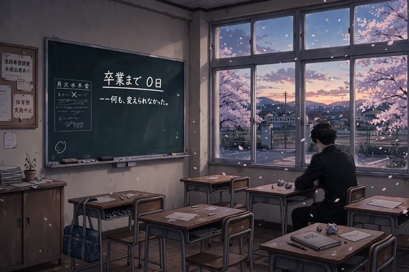
166. バッド：窓際の席（桜井さくら／夕方）
条件：ライバルエンディングに到達する ― 夕方の空の教室、窓際の席。放課後のざわめきは、もう戻らない。
【エンディング】13件

167. 屋上の告白（桜井さくら／卒業式）
条件：恋愛エンディングに到達する ― 卒業式の最後、校舎の屋上。夕日と桜と、3年分の想い。――神話は本当だった。少なくとも、この二人にとっては。
168. エンディング：親友（桜井さくら／卒業式）
条件：親友エンディングに到達する ― 恋人にはならなかったけれど、一生の親友を得た卒業。それも立派な青春の答えだった。
169. エンディング：ライバル（桜井さくら／卒業式）
条件：ライバルエンディングに到達する ― 好感度は高かったのに、信頼が届かなかった。恋は好意だけでは実らないと、最後の日に教わった。
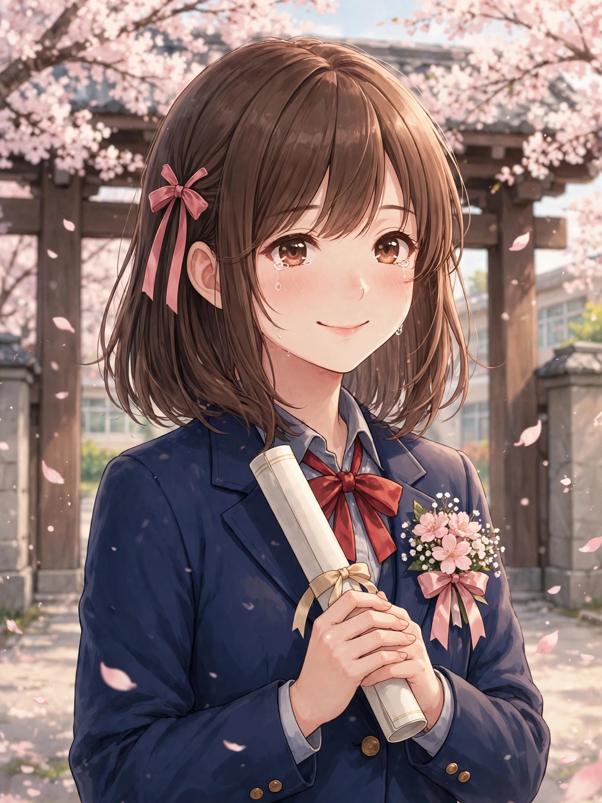
170. エンディング：仕事成功型（桜井さくら／卒業式）
条件：人生型エンディング「仕事成功型」に到達する ― 学業に打ち込んだ1年が実を結んだ。恋より先に、自分の未来を掴んだ春。
171. エンディング：趣味没頭型（桜井さくら／卒業式）
条件：人生型エンディング「趣味没頭型」に到達する ― 好きな事に没頭した1年。鞄の中の作品ノートの重さが、青春の証だった。
172. エンディング：友人関係充実型（桜井さくら／卒業式）
条件：人生型エンディング「友人関係充実型」に到達する ― 友達に囲まれた最高の1年。卒業写真の真ん中の笑顔が、全部を物語っていた。
173. エンディング：独身自由人型（桜井さくら／卒業式）
条件：人生型エンディング「独身自由人型」に到達する ― 誰にも縛られない、自由な人生の始まり。卒業は終わりではなく出発だった。
174. エンディング：何も成し遂げられなかった型（桜井さくら／卒業式）
条件：人生型エンディング「何も成し遂げられなかった型」に到達する ― 何に打ち込むでもなく過ぎた1年。けれど後悔があるなら、次は変えられる。
175. エンディング：さくら（桜井さくら／卒業式）
条件：桜井さくらとの恋愛エンディングに到達する ― 卒業式の最後、校舎の屋上で——。

176. エンディング：あかり（星野あかり／卒業式）
条件：星野あかりとの恋愛エンディングに到達する ― 伝説の桜の木の下で——。
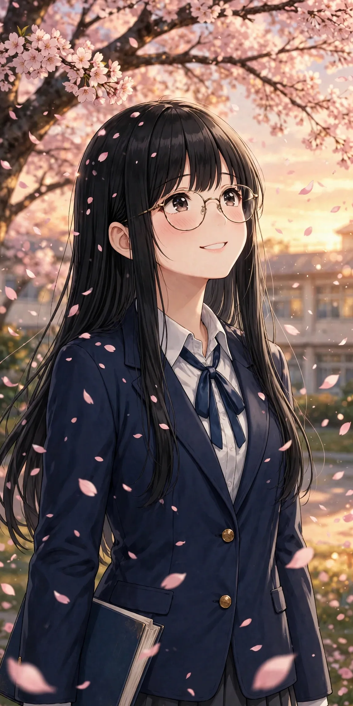
177. エンディング：ゆき（月島ゆき／卒業式）
条件：月島ゆきとの恋愛エンディングに到達する ― 伝説の桜の木の下で——。

178. エンディング：りん（藤原りん／卒業式）
条件：藤原りんとの恋愛エンディングに到達する ― 伝説の桜の木の下で——。
179. エンディング：それぞれの春（桜井さくら／卒業式）
条件：恋愛成就以外の卒業を迎える（一部のエンディングで解放） ― 恋だけが青春じゃない。仲間と笑い、努力した1年は、確かに自分のものになった。
【隠し】4件

180. 卒業集合写真（桜井さくら／卒業式）
条件：ヒロイン全員（4人）の恋愛エンディングに到達する（パーフェクトクリア特典） ― 卒業の日、全員で撮った集合写真。4人それぞれの物語を見届けた証。

181. やなで鮎スナップ（桜井さくら／夏）
条件：ヒロイン全員（4人）の恋愛エンディングに到達する（パーフェクトクリア特典） ― やな場で撮った、鮎と笑顔のスナップ写真。黒羽の夏を制覇した記念。
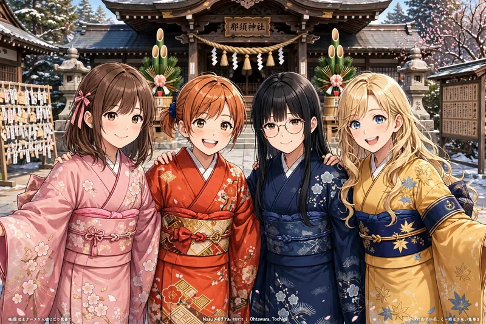
182. 初詣・振袖（桜井さくら／初詣）
条件：ヒロイン全員（4人）の恋愛エンディングに到達する（パーフェクトクリア特典） ― 初詣の振袖姿。全員と出会った新年だけの、特別な一枚。

183. 那珂川でスイカ割り（桜井さくら／夏）
条件：ヒロイン全員（4人）の恋愛エンディングに到達する（パーフェクトクリア特典） ― 那珂川の河原でスイカ割り。海と川、両方の夏を楽しんだ証。
Snow Moon Games ／ 管理者向け資料